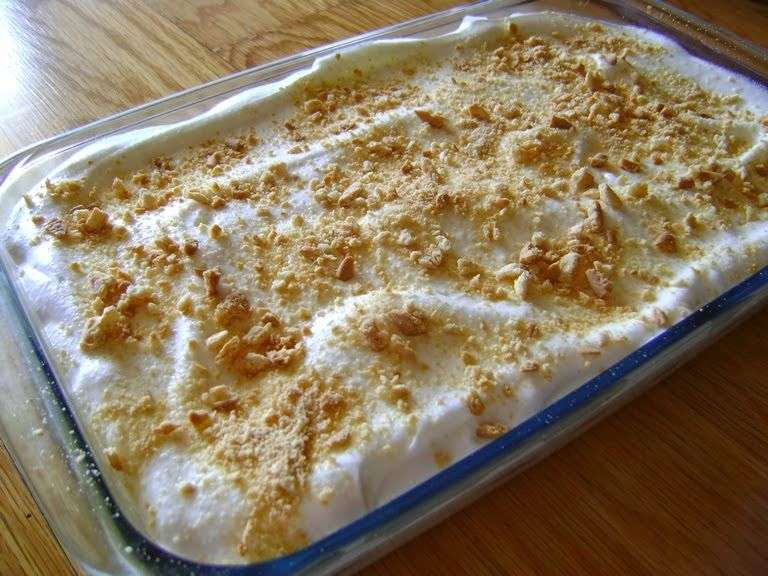
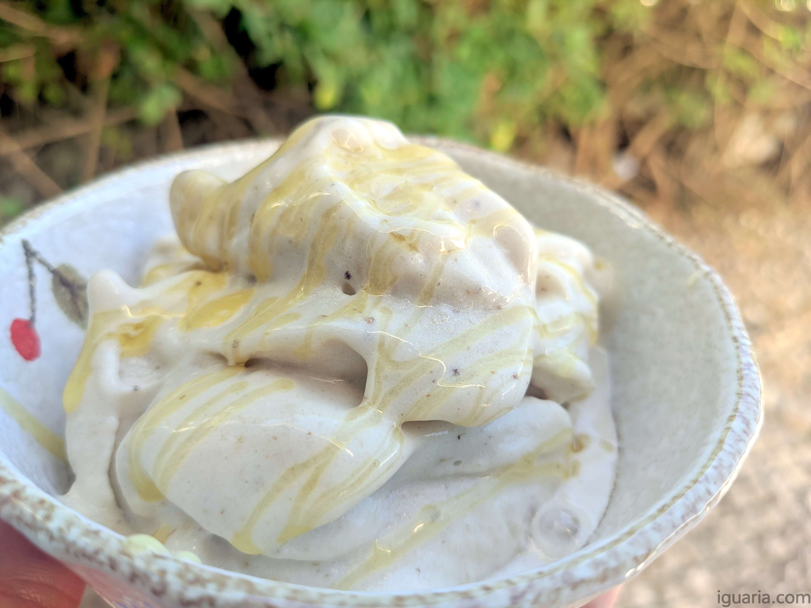
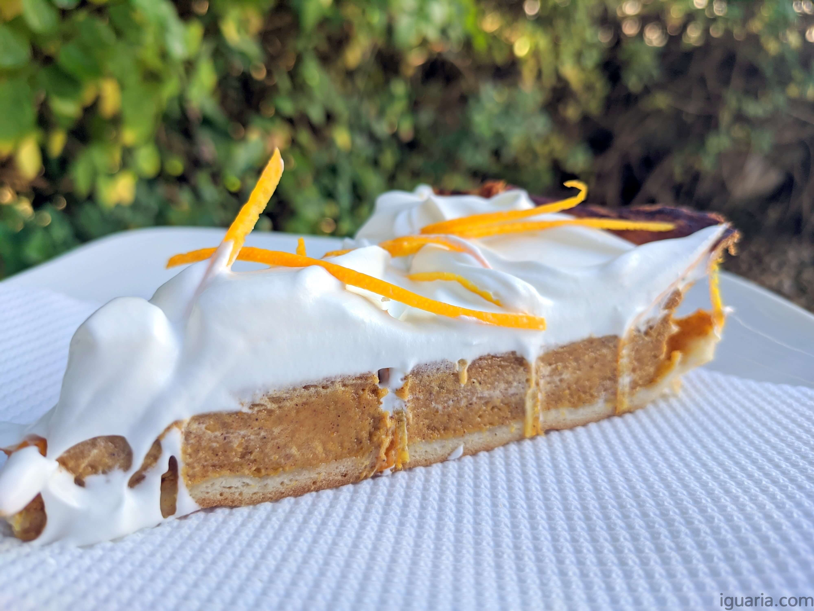

Doce de bolacha com leite condensado

Ingredientes
- Natas – 2 Pacotes (+/- 400ml)
- Leite Condensado – 1 Lata (+/- 400ml)
- Gelatina – 4 Folhas
- Leite – 3 Colheres de Sopa
- Bolacha Maria Ouro – 1 Pacote
Preparo
- Começa por bater as natas frias até ficarem espessas num pico duro, depois junta o leite condensado e bate mais um pouco até ficar tudo bem incorporado.
- Demolha as folhas de gelatina em água fria, deixa estas até ficarem bem moles.
- Aquece o leite um pouco e depois deita as folhas de gelatina dentro, até ficarem bem dissolvidas e deixa de parte para arrefecer um pouco./li>
- Leite – 3 Colheres de Sopa
- Bolacha Maria Ouro – 1 Pacote
Doce de bolacha com leite condensado

Ingredientes
- Banana – 4 Pequenas (Da Madeira hehehe ou 2 Grandes)
- Leite – A Gosto/O necessário (Eu usei 2 Colheres de Sopa)
- Leite – A Gosto/O necessário (Eu usei 2 Colheres de Sopa)
Preparo
- Tu precisas de bananas maduras, porque senão o gelado não vai ter sabor, quando tiveres bananas bem maduras, descasca estas e corta em fatias e leva tudo ao congelador.
- O melhor é deixar no congelador de um dia para outro, mas o mínimo são umas 4 horas, precisas que as bananas fiquem bem congeladas.
- O melhor é deixar no congelador de um dia para outro, mas o mínimo são umas 4 horas, precisas que as bananas fiquem bem congeladas.
- Leite – 3 Colheres de Sopa
- Prova e ajusta a textura, se achares que está bom não adiciones leite, eu gosto de um pouco mais cremoso, algo entre gelado a ficar mole e um sundae, dai adicionei duas colheres de sopa de leite, e triturei mais um pouco e ficou exatamente como gosto.
- Por fim servir com um fio de mel e já está! ;D Bom proveito!
Doce de bolacha com leite condensado

Ingredientes
- Massa Quebrada – 1 Rolo (+/- 200gr)
- Abóbora – 440gr (Já Cozida, +/- 1 Kg Crua)
- Açúcar – 180gr
- Ovos – 3
- Natas – 200ml
- Canela – 1 Colher de Chá
- Pumpkin Spice – 1 Colher de Chá (Especiaria de Abóbora)
- Sal – Uma Pitada
- Natas – 200ml (Frias)
- Açúcar – 80gr
- >Sal – Uma Pitada
Preparo
- Começa por descascar, cortar em cubos e cozer a abóbora numa panela com bastante água quente e uma pitada de sal.
- Deixa cozer uns 15 a 20 minutos, depois pica com uma faca, se não sentires resistência então a abóbora está cozida.
- Retira pedaços até fazer +/- 440 gr e tritura estas até criar um puré suave, deixa de parte a arrefecer.
- Pré-aquece o forno a 180ºC e prepara uma forma de tarte, forra esta com papel anti-aderente e dispõe a massa quebrada, pica o fundo com um garfo.
- Junta numa taça os ovos e o açúcar, bate estes até ficarem bem cremosos.
- Junta então o puré de abóbora, natas, canela, pumpkin spice e uma pitada de sal, mistura tudo bem até obteres um creme homogéneo.
- Deita o creme na forma com a massa quebrada e leva ao forno por uns 50 minutos a 1 hora, esta é uma massa muito liquida que demora algum tempo a assar, se o topo ou a massa quebrada estiver a queimar, cobre com uma folha de alumínio, quando picares com um palito no centro e sair seco, então está pronta, retira do forno.
- Muitas vezes esta tarte é só servida no dia seguinte, assim tem tempo de assentar e desenvolver o seu aroma, por isso foi isso que fiz, mas se não quiseres podes servir quente com chantilly ao lado ou deixar resfriar e servir com o chantilly em cima da tarte.
- No dia seguinte, fiz um chantilly, batendo natas bem frias com 80gr de açúcar e uma pitada de sal até ficarem montadas.
- Cobri a tarte e fiz umas raspas de laranja para decorar, bom apetite e se és Americano Happy ThanksGiving!